AI가 잘할수록 확인은 느슨해져요
에디 오스마니는 Anthropic에서 Claude Code를 만드는 사람이에요. 그런데 모든 걸 버튼 하나로 자동화하자는 요즘 흐름과 달리, 에이전트에게는 내가 검토할 수 있는 만큼만 맡기라고 해요. 검토할 수 없다면 속도를 줄이라고까지 말해요.
영상이 처음 띄우는 화면이 그 대목이에요. 빨간 테두리 안 문장이 핵심이에요. 끝난 작업이 처리할 수 있는 속도보다 빨리 쌓이면, 세션을 하나 더 여는 건 도움이 안 된다는 거예요. 고칠 방법은 둘뿐이에요. 검사를 촘촘하게 해서 내가 볼 양을 줄이거나, 속도를 늦추거나요.
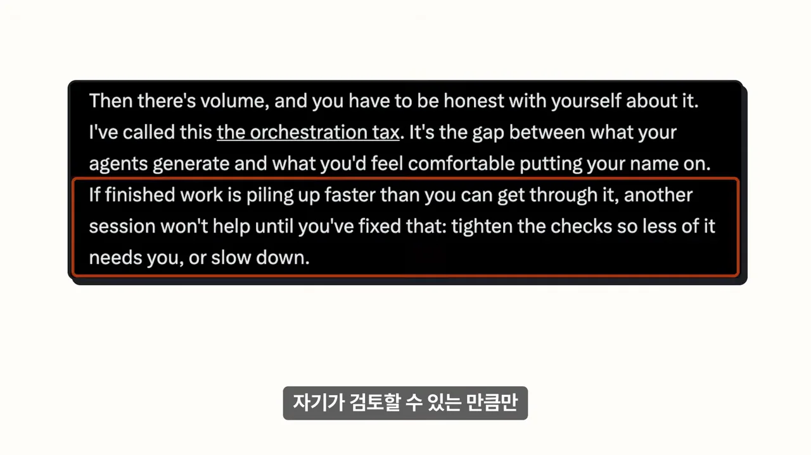
If finished work is piling up faster than you can get through it, another session won't help until you've fixed that: tighten the checks so less of it needs you, or slow down.
끝난 작업이 처리하는 속도보다 빨리 쌓인다면, 그걸 고치기 전까지는 세션을 하나 더 열어도 소용없어요. 검사를 조여서 내가 볼 몫을 줄이거나, 속도를 늦춰야 해요.
— 에디 오스마니 원문 (이 영상 00:00 부근)
만드는 쪽은 늘어도 확인하는 나는 한 명이에요
영상은 AI로 웹사이트를 만드는 장면으로 설명해요. 처음엔 기능 하나를 받아도 버튼을 눌러 보고 코드도 살펴요. 그런데 AI가 생각보다 잘해서 회원 가입, 게시판, 검색을 차례로 맡기게 돼요. 앞의 결과를 아직 보고 있는데 다음 작업이 끝났다는 보고가 들어와요. 에이전트를 여러 개 돌리면 결과가 한꺼번에 도착하기도 하고요.
아래 슬라이드가 이 상황을 한 줄로 줄여요. 위 문장은 '에이전트는 내가 리뷰할 수 있는 것보다 더 많이 내보낼 수 있다', 아래 노란 문장은 '그럼 당신은 아직 무엇을 위해 있나'라는 질문이에요. 영상은 여기에 병목이라는 꼬리표를 붙였어요.
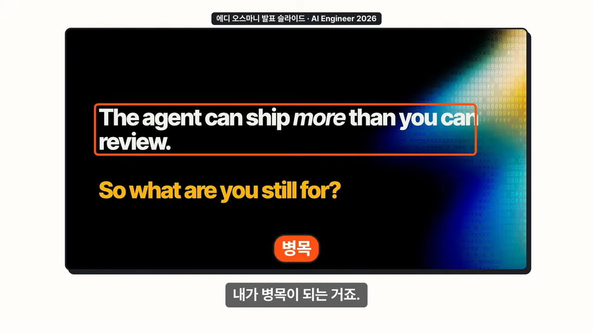
확인은 한 번에 무너지지 않아요
병목이 생기면 확인하는 방식이 조금씩 바뀌어요. 처음엔 결과를 하나씩 보다가, 다음엔 바뀐 부분만 훑고, 나중엔 AI가 쓴 완료 보고만 읽어요. 보고에는 '기능을 추가했고 테스트도 통과했다'고 적혀 있고, 딱히 이상한 점도 안 보여요. 그러면 결과를 다시 따져 보기보다 맞다는 전제로 다음 일을 시작해요.
에디는 이 흐름을 세 단계로 나눠요. 화면의 곡선이 위에서 아래로 내려가는 순서예요. 맨 위 offloading은 일을 맡기되 결과는 내가 책임지는 상태, 가운데 deferral은 판단의 위탁, 맨 아래 빨간 점 surrender가 인지적 항복이에요.

영상이 말한 확인 습관의 변화를 이 세 단계에 겹쳐 보면 아래와 같아요. 마지막 칸은 내가 고른 게 하나도 없는데 AI의 판단이 그대로 내 판단이 된 상태예요.
문제는 이게 한 번에 확 바뀌지 않는다는 거예요. AI가 잘할수록 멈춰서 생각할 계기가 줄어요. 겉으로는 기능이 계속 붙으니 일이 잘되는 것 같아요. 하지만 왜 그렇게 만들었는지, 어떤 문제가 생길 수 있는지에 대한 내 이해는 그 속도를 못 따라가요. 그래서 끝난 작업이 검토 속도보다 빨리 쌓인다면, 에이전트를 하나 더 켜도 검토할 일만 늘어난다는 게 에디의 말이에요.
검사 통과와 말하지 않은 빈칸
확인하는 일도 AI에게 맡기면 되지 않을까요? 실제로 Claude Code 팀은 검토에 AI를 적극적으로 써요. AI가 코드를 쓰면 다른 에이전트가 새 컨텍스트에서 그 코드를 검토하고, 테스트와 빌드를 돌리고, 보안 문제를 따로 검사해요. 사람이 보기 전에 여러 번 확인을 거치게 만들어 둔 거예요.
그런데 에디는 여기서 하나를 더 물어요. 검사를 통과했다는 건 정확히 무엇을 확인했다는 뜻일까요?
기능과 테스트가 같은 조건을 빠뜨리면
영상은 회원 가입으로 예를 들어요. 같은 이메일로는 계정을 하나만 만들 수 있어야 하죠. 아래 화면 오른쪽을 보면 user@example.com으로 두 번 가입했는데 둘 다 초록 체크가 떠 있어요. 기능을 만들면서 '같은 메일은 한 번만' 조건을 빠뜨렸고, 테스트도 '새 계정이 생기나'만 확인했기 때문이에요.

그래서 에디는 무엇을 '검증 완료'로 볼지 작업 전에 정하라고 해요. 결과가 나온 뒤에 기준을 정하면 그 결과에 요구 사항을 끼워 맞추게 되니까요. 영상이 띄운 원문 두 줄이 이 대목이에요.
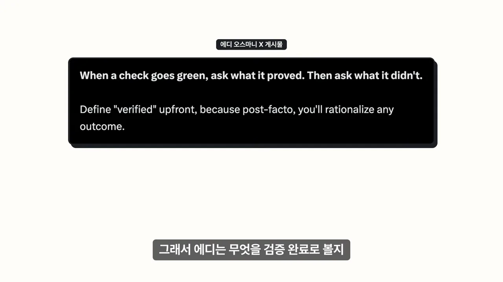
Define "verified" upfront, because post-facto, you'll rationalize any outcome.
'검증됨'의 기준은 미리 정해요. 나중에 정하면 어떤 결과든 그럴듯하게 합리화하게 돼요.
— 에디 오스마니 원문 (이 영상 03:44 부근)
작업이 끝났을 때 볼 것도 정해 줘요. 아래 그림에서 사람은 위쪽 '완료 요약' 카드가 아니라 아래 터미널을 들여다봐요. npm test를 실제로 돌렸고 tests/signup.test.js가 통과했다는 출력이에요. 오른쪽 아래 '클로드 코드 팀'과 '실행 결과' 꼬리표는 Claude Code 팀도 이런 증거를 확인하는 일을 여전히 사람 몫으로 꼽는다는 뜻이에요.
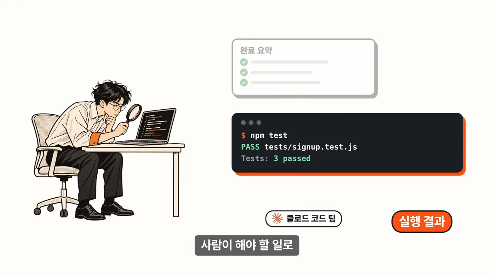
말하지 않은 빈칸은 AI가 채워요
그런데 같은 이메일로 가입하면 안 된다는 조건은 처음에 누가 정했어야 할까요? 영상은 일을 맡기는 순간으로 넘어가요. 게시판을 만들어 달라고 하면 AI는 그럴듯한 게시판을 만들어 줘요. 흔한 기능이니까요.
아래 화면 오른쪽 '게시판 설정'을 보면 빈칸이 셋이에요. 누구를 위한 게시판인지, 누가 읽을 수 있는지, 탈퇴한 회원의 글은 어떻게 할지예요. AI는 각각 '모든 방문자', '누구나', '그대로 둠'으로 채웠어요. 하지만 왼쪽 사람이 속으로 바란 건 '누가 읽나: 회원만'이었어요. 그래서 가운데 ≠ 표시가 붙었어요.
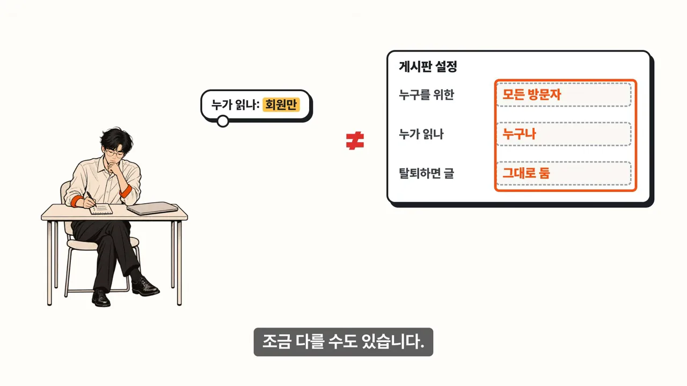
에디가 입력의 질을 강조하는 이유가 이거예요. 내가 문제를 얼마나 이해했는지가 요청에 그대로 드러나요. 그래서 맡기기 전에 세 가지를 내 말로 정리하라고 해요. 화면의 번호 카드 세 장이에요.
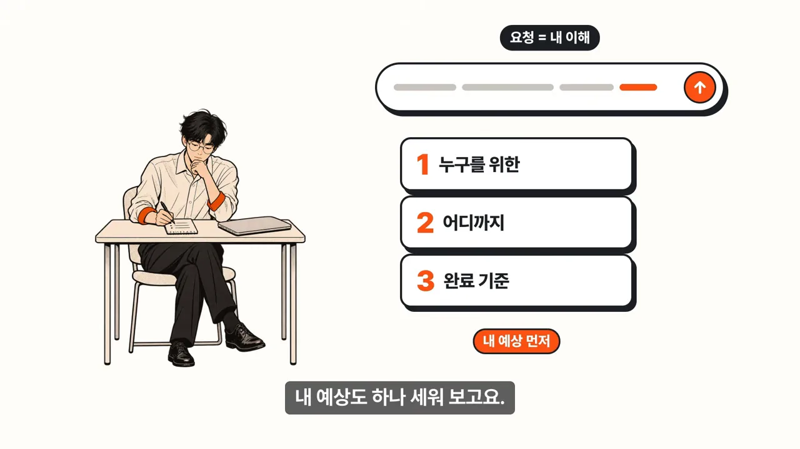
예상을 먼저 세우는 이유도 있어요. 잘 쓴 답을 먼저 읽으면 다른 가능성을 떠올리기 어려워지거든요. 그렇다고 답을 처음부터 다 알아야 하는 건 아니에요. 모호한 부분은 AI에게 질문해 달라고 하면 돼요. 예를 들면 이렇게요.
게시판을 만들기 전에 내가 정해야 할 사항을 질문해 줘.AI의 질문에 답하다 보면 누가 글을 읽을 수 있어야 하는지처럼 아직 정하지 않은 선택이 드러나요. 대화를 거치며 요청도 선명해지고, 내가 원하는 것에 대한 이해도 선명해져요. 에디는 이런 협력 과정을 중요하게 봐요.
다 이해하지 않아도 돼요, 단 위험에 따라
방향을 정했어도 완성된 웹사이트에는 여전히 모르는 코드가 많아요. 그것까지 다 알아야 할까요? Claude Code 팀도 코드베이스 전체를 한 사람이 머릿속에 넣어 두지는 않는다고 해요. 그건 불가능하니까요.
대신 어떤 부분을 바꿔야 할 때 Claude에게 바로 그 부분의 구조와 동작을 설명해 달라고 해요. 필요한 이해를 그때그때 다시 만드는 거예요. 아래 화면은 회원 가입 방식을 바꾸려 할 때 먼저 들을 설명을 세 칸으로 보여 줘요. 가입 화면에서 들어온 정보가 확인(방패 아이콘)을 거쳐 계정이 되는 흐름이에요.
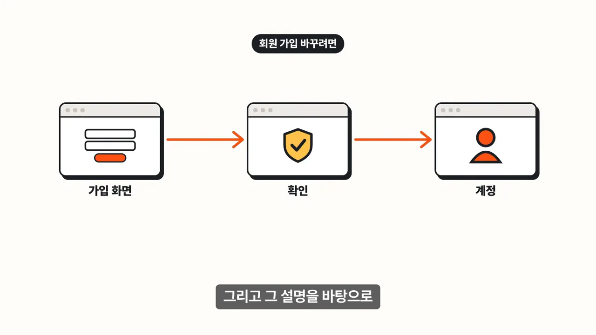
틀려도 괜찮은 일은 통째로 맡겨요
그래도 할 일이 많은데 언제 다 하냐는 생각이 들 수 있어요. 그래서 모든 일에 같은 깊이로 들어갈 필요는 없어요. 에디는 강의 촬영 장소로 쓸 호텔을 고를 때 후기를 다 읽을 시간이 없었어요. 그래서 평점이 비슷한 세 곳 중 하나를 AI에게 고르게 했고, 결과도 꽤 만족스러웠대요. 아래 화면의 카메라 옆 호텔 세 채와 별점 칸이 그 장면이에요.
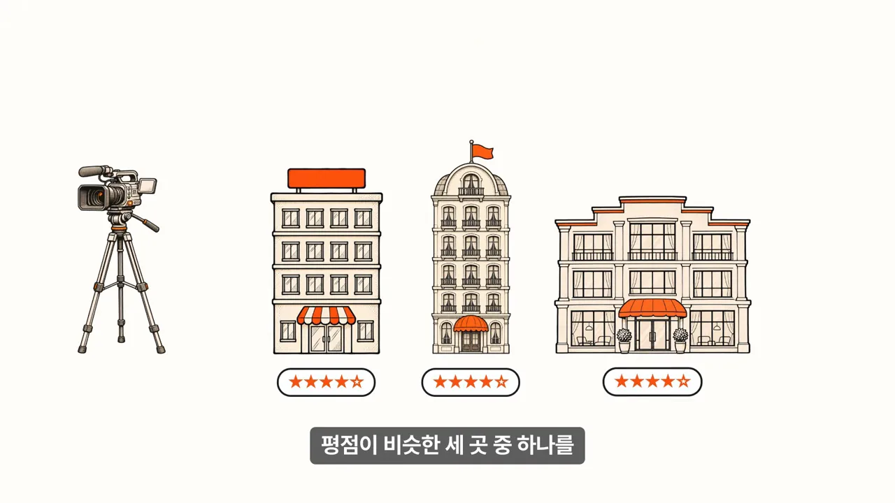
아이디어를 확인하려고 잠깐 만드는 프로토타입, 혼자 쓰다 버릴 도구도 같은 쪽이에요. 틀려도 쉽게 버리거나 고칠 수 있으니, 처음부터 모든 코드를 이해하고 검토하는 데 시간을 쓸 필요가 없어요. 일단 빠르게 만들어 보고 계속할 가치가 있는지 보면 돼요.
남이 의존하기 시작하면 기준을 바꿔요
다만 상황이 바뀌면 확인 기준도 바뀌어야 해요. 영상이 든 경우를 정리하면 이래요.
| 통째로 맡겨도 되는 일 | 판단 근거를 직접 이해해야 하는 일 |
|---|---|
| 평점이 비슷한 호텔 중 하나 고르기 | 무엇을 제품으로 만들지 정하기 |
| 아이디어 확인용 프로토타입 | 어떤 변경이 사용자에게 영향을 줄지 따지기 |
| 혼자 잠깐 쓰고 버릴 도구 | 안전하게 출시할 수 있을지 정하기 |
| 버튼 색 바꾸기 | 다른 회원의 정보가 보일 수 있는 변경 |
왼쪽 일도 계속 쓰기로 하거나, 다른 사람이 의존하게 되거나, 중요한 데이터를 받기 시작하면 오른쪽으로 넘어가요. Claude Code처럼 많은 사람이 오래 쓰는 제품이라면 지금 내린 선택을 나중에도 계속 감당해야 하니까요.
아래 화면이 마지막 줄을 그대로 보여 줘요. 왼쪽과 오른쪽은 같은 웹사이트예요. 왼쪽 '버튼 색 바꾸기'에는 초록 체크가, 오른쪽 '다른 회원 정보 노출'에는 빨간 느낌표가 붙어 있어요.
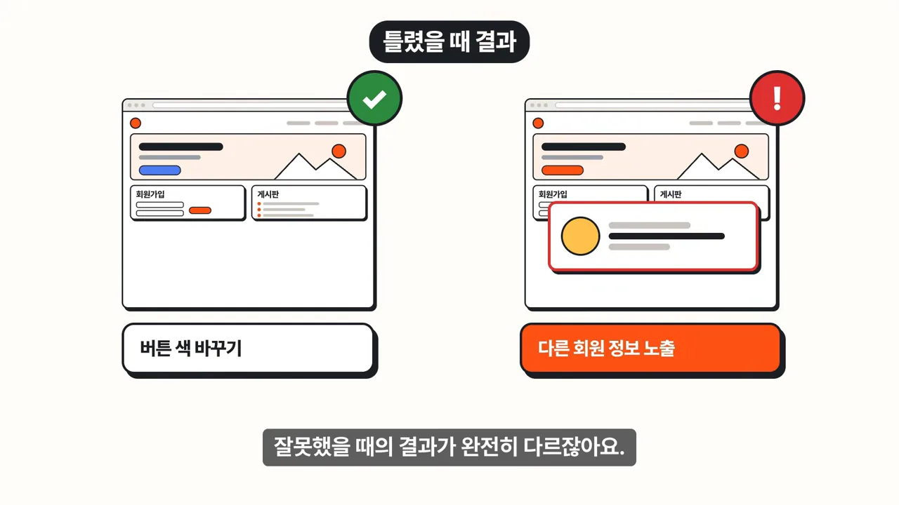
결국 어디까지 맡길지는 두 가지로 정해요. 그 일이 틀렸을 때 누가 무엇을 감당하는지, 그리고 결과를 내가 어떻게 확인할 수 있는지예요.
Take the handoff where being wrong is cheap, keep the reasoning where others will have to deal with the consequences.
틀려도 대가가 작은 일은 넘기고, 다른 사람이 결과를 감당해야 하는 일은 판단을 쥐고 있어요.
— 에디 오스마니 원문 (이 영상 07:28 부근)
모델이 더 잘하게 되면 판단도 맡길까요?
여기까지 들으면 이런 생각이 들 수 있어요. 그런 판단까지 모델이 나보다 더 잘하게 되면, 이 조언도 필요 없어지지 않을까요? 실제로 원문 댓글에도 그런 반론이 있었어요. 몇 달 뒤면 이런 글을 사람이 자기 역할을 지키려던 흔적으로 보게 될 거라는 주장이에요.
에디도 모델이 문제를 찾아내는 능력은 더 좋아질 수 있다고 인정해요. 검토를 점점 더 에이전트에게 넘기자는 입장이기도 하고요. 그래도 사람이 직접 답해야 할 질문은 남는다고 해요. 영상이 띄운 원문 단락이 그 목록이에요. 무엇을 만드는지, 왜 그럴 가치가 있는지, 누구에게 영향을 주는지, 무엇을 포기할 건지예요.
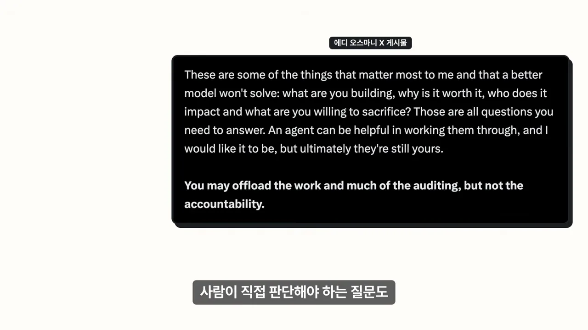
You may offload the work and much of the auditing, but not the accountability.
일과 검사의 많은 부분은 넘길 수 있어도, 책임은 넘길 수 없어요.
— 에디 오스마니 원문 (이 영상 08:32 부근)
AI가 선택지의 장단점을 분석해 줄 수는 있어요. 하지만 그중 무엇을 받아들일지 정하는 사람, 그 결과를 책임지는 사람은 여전히 남아요. 그러니 AI를 얼마나 믿을지 정하는 일 자체도 하나의 판단이에요.
판단력은 안 쓰면 약해져요
그 판단력을 지키기는 쉽지 않아요. 영상은 Anthropic이 자기 직원들을 인터뷰한 연구 글을 보여 줘요. 노란 형광 부분은 '더 많이 맡길수록 기술이 약해진다'는 걱정이고, 그 뒤로 직접 문제를 풀며 덤으로 얻던 배움을 잃는다는 말이 이어져요.
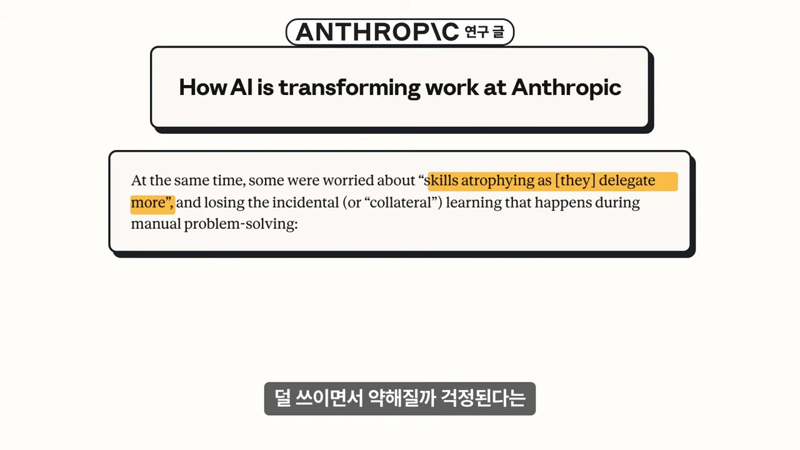
그래서 에디는 지키고 싶은 능력을 일부러 직접 써 보라고 해요. 내가 더는 직접 하지 않게 된 일을 살펴보고, 그중 놓치고 싶지 않은 걸 골라서요.
처음 배우는 사람은 판단력을 어떻게 기를까요
원문 댓글 중 공감을 많이 받은 질문이 있어요. 아래 X 댓글이에요. 코드를 손으로 직접 써 본 적이 없는 주니어는 그 판단력을 어떻게 기르냐는 거예요.
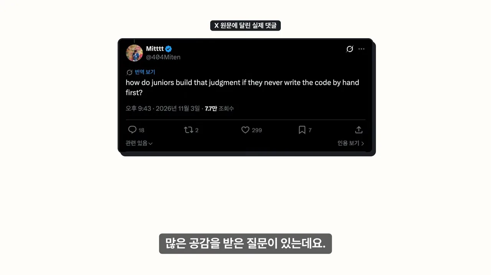
영상의 답은 결과만 받고 끝내지 말라는 거예요. 왜 이렇게 만들었는지 설명을 같이 부탁해요. 아래 그림에서 사람은 로봇이 화이트보드에 그린 구조를 보며 물음표를 띄우고 있고, 오른쪽 위에는 그 구조가 따로 정리돼 있어요.
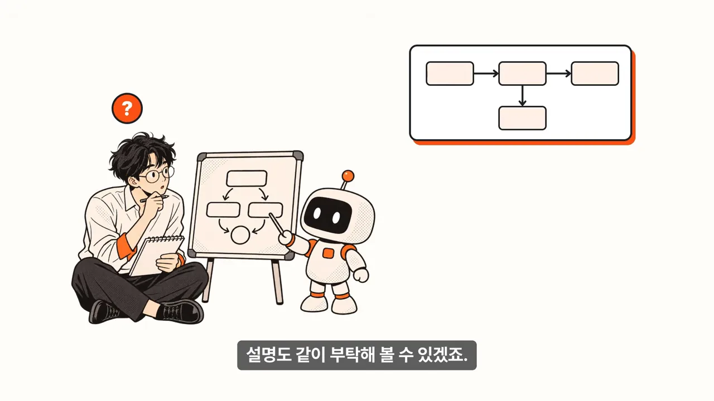
더 많이 맡기려면 검증부터 만들어요
남은 과제는 판단은 내가 온전히 쥐면서도 AI에게 더 많이 맡길 방법을 만드는 거예요. 영상은 회원 가입 예로 돌아가요. 기능과 테스트가 모두 중복 가입 조건을 빠뜨렸던 경우예요. 한 번 고치고 끝내면 다음 작업에서도 비슷한 조건을 놓칠 수 있어요.
아래 화면에서 달라진 곳은 두 번째 줄이에요. 앞에서는 같은 이메일 두 줄 모두 초록 체크였는데, 이제 두 번째 줄에 빨간 X가 떠요. 그 아래 '중복 가입 테스트'를 남겼고, '지킬 조건 기록'도 붙였어요.
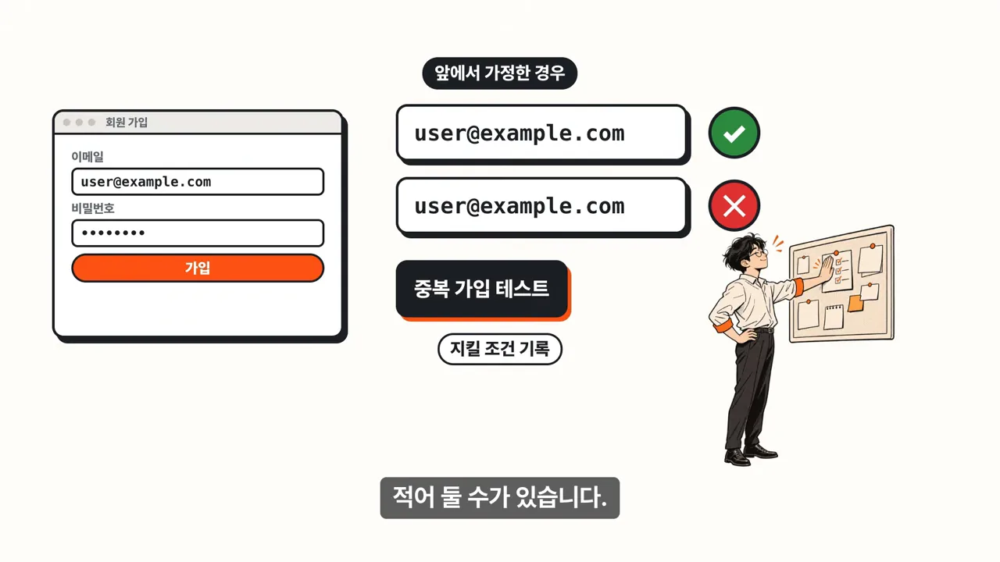
Claude Code 팀도 같은 방식으로 일해요. 검토에서 같은 문제가 반복되면 지침, 스킬, 자동 검사에 반영해요. 그리고 지난 장애 사례를 모아 리뷰가 그 문제를 실제로 찾아내는지 시험해요. 화면 오른쪽 꼬리표 네 개가 그 순서예요.
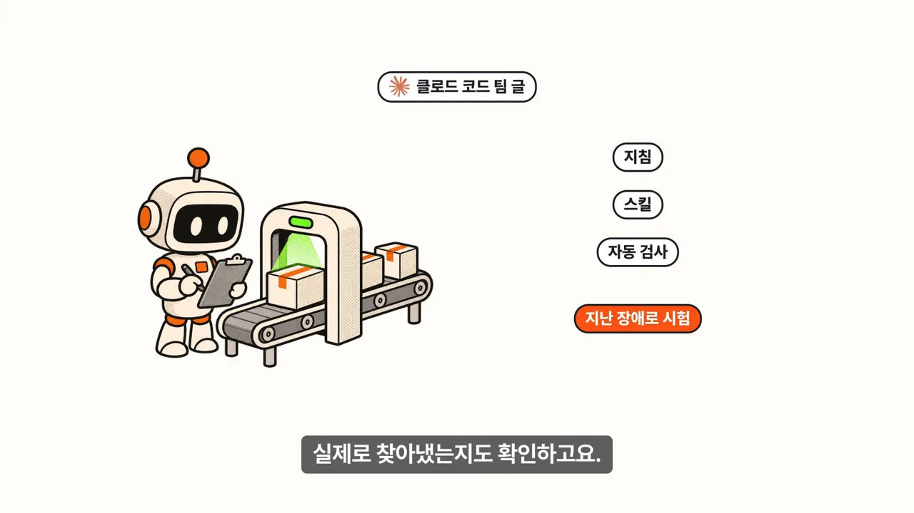
에디도 결과물이 자기 기준에 못 미쳤다면 왜 그랬는지 기록해서 다음 작업에 반영하라고 해요. 아래 그림의 두 꼬리표 '왜 부족했나 기록'과 '다음 작업에 반영'이 그 말이에요. 그래야 같은 문제를 매번 처음부터 다시 찾지 않아요.
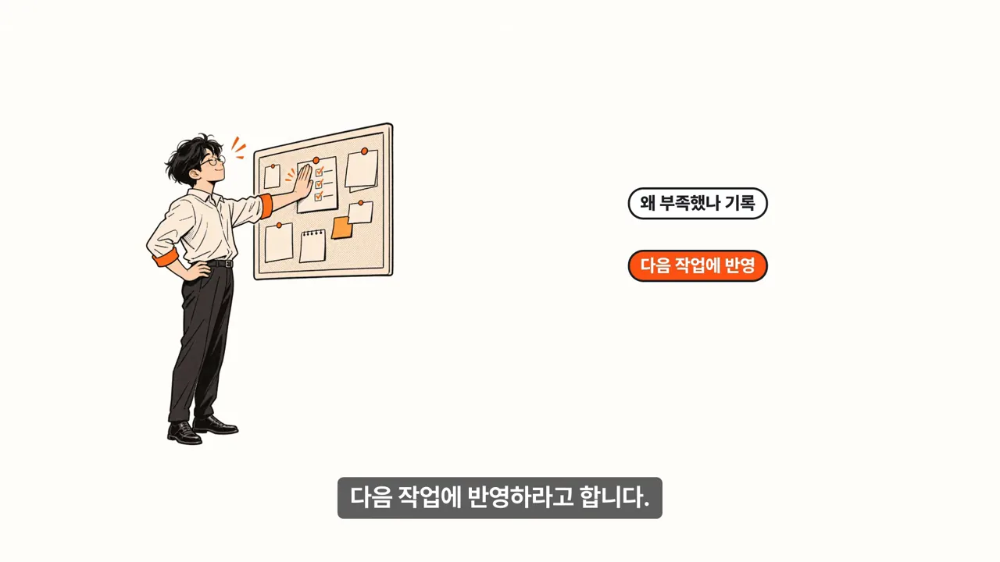
그때 내 몫은 그 검사가 무엇을 확인하는지, 어디에 내 판단이 들어가야 하는지를 살피는 거예요.
에디가 제시하는 두 갈래
처음 이야기로 돌아가요. 끝난 작업이 사람이 검토할 수 있는 양보다 빨리 쌓일 때 에디가 제시하는 길은 두 가지예요. 검증을 강화해서 내가 직접 볼 양을 줄이거나, 작업 속도를 낮추거나요.
영상의 저울 그림도 같은 말을 해요. 왼쪽 접시에 쌓인 결과 더미가 무거워질수록, 반대편에 올릴 '검증'도 같이 늘어야 균형이 맞아요.
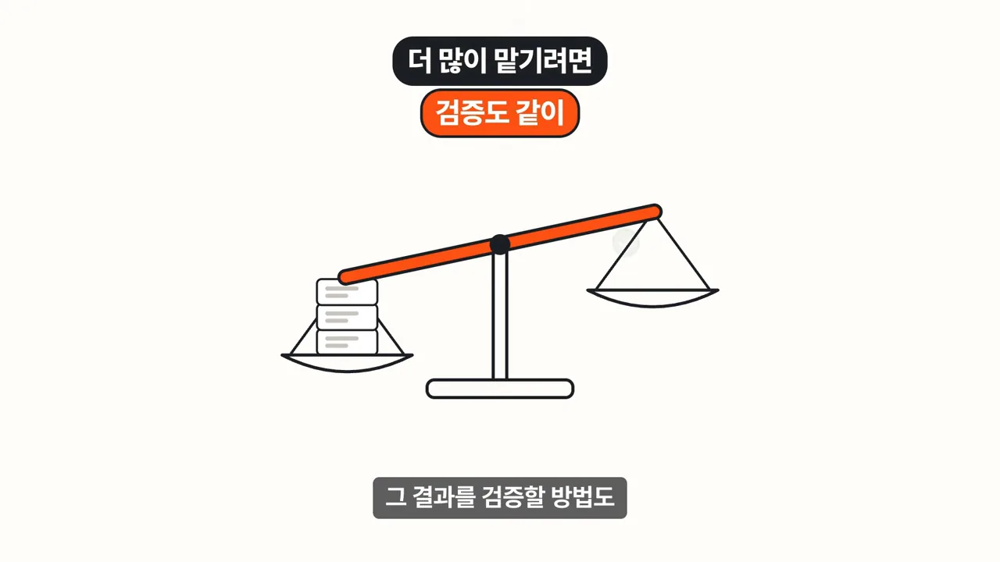
Claude Code 팀도 코드를 만들고 검토하는 데 AI를 많이 써요. 그래도 어디까지 맡길지, 어떤 결과면 괜찮은지는 사람이 계속 판단해요.
진행자가 직접 해 볼 것
진행자는 이 글에서 '작업 전에 세 가지 정하기'를 가장 중요하게 꼽아요. 누구를 위한 작업인지, 이번엔 어디까지 만들지, 어떤 상태면 끝인지예요. 자기도 비슷한 실수를 한 적이 있대요. 화면 오른쪽 위 꼬리표 두 개가 그 이야기예요. 처음엔 '범위 1개'였는데, 중간에 '끝까지!'로 바뀌어요.
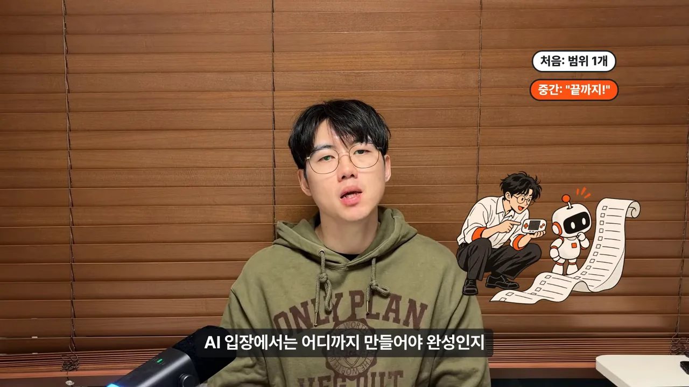
게임을 만들 때였어요. 처음엔 고칠 부분 하나를 고르고 완료 조건도 직접 정해서 넘겼어요. 그러다 토큰을 더 빨리 쓰고 싶어서 중간에 '게임을 끝까지 완성해 줘'로 범위를 넓혔어요. 범위를 늘릴 거면 완료 기준도 다시 잡았어야 했던 거예요. 그래서 앞으로는 세 가지부터 정하고 맡기겠다고 해요. 중간에 범위를 넓히면 어디까지 끝낼지도 같이 정하고요.